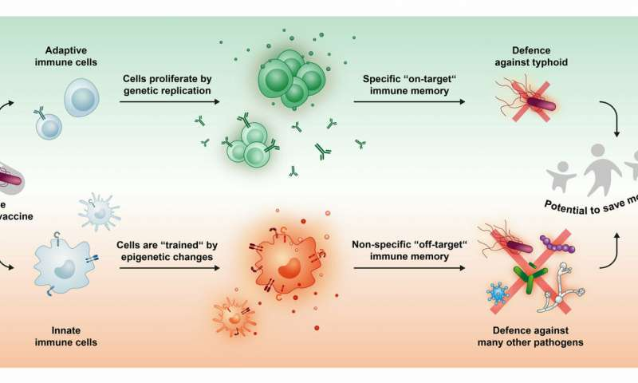

TYPHOID

Symptoms
- Extremely high fever
- Loss of apetite
- swollen belly
- Heasdache
- Constipation
- Weight loss and Weakness
- Diarrhoea
- Abdomen pain
Precautions
- Eat home-cooked food
- Avoid frozen and half-cooked food
- Use filtered water for brushing
- If fever doesnot subside,visit a doctor
- Wash hands before meals
- Carry your own drinking water